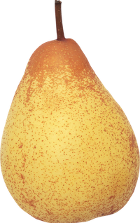
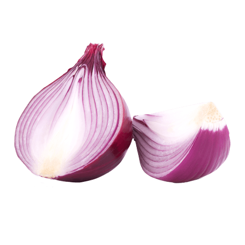
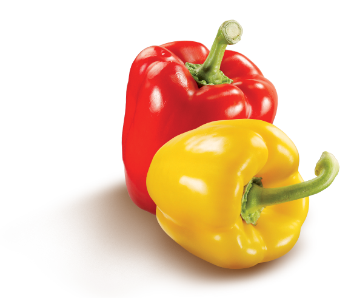
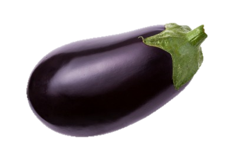
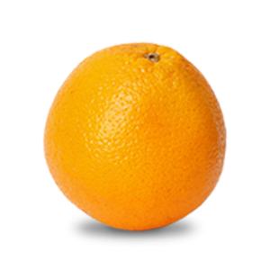
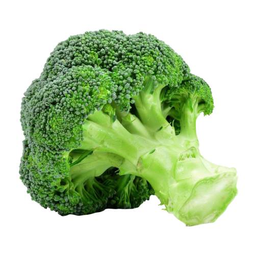
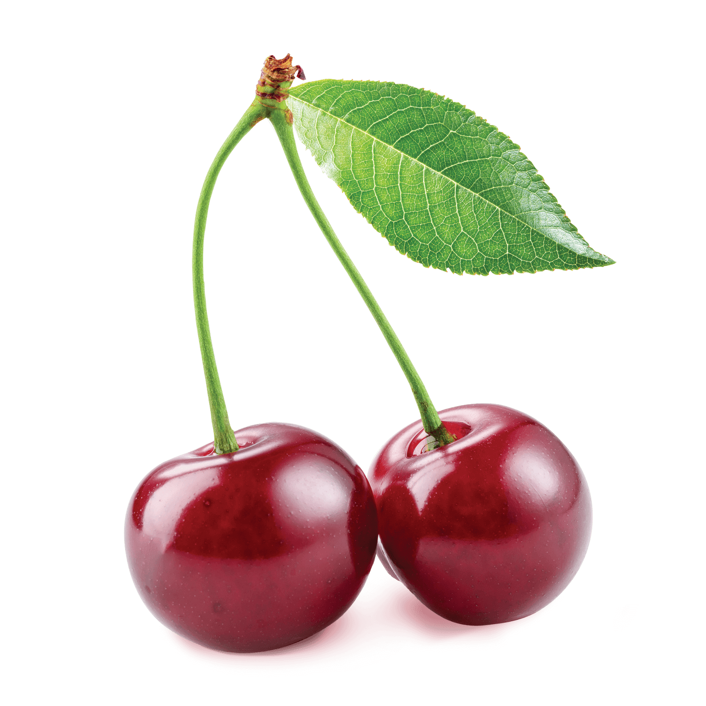
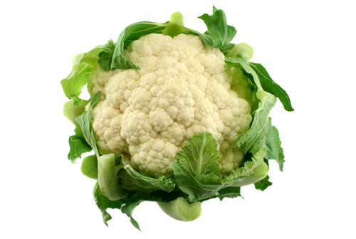

alcuni prodotti

La pera ha una polpa dolce caratterizzata da piccoli granellini. Mangiala fresca, ma provala anche cotta, con cannella e zucchero, o sciroppata. Il succo di pera è uno dei più amati dai bambini.

CIPOLLA
La cipolla cruda dona una nota piccante e intensa nelle insalate; se rosolata o stufata diventa dolce e morbida; fritta aggiunge una dimensione dolce amara nel panino.

PESCA
Bianche o gialle, le pesche sono molto dissetanti e non troppo dolci. Puoi mangiarle fresche, al limone, oppure in succo o in marmellata.

PEPERONE
Sono veramente pochissime le verdure che possono vantare così tanti colori, forme, dimensioni e sapori come il peperone. Gustoso come pochi.

ALBICOCCA
Polpa soda, profumata, dal sapore dolce-acidulo. Deliziosa quando è matura, si conserva tutto l’anno una volta essiccata. L’albicocca può essere utilizzata per produrre succhi di frutta e marmellata.

MELANZANA
La melanzana viene consumata preferibilmente cotta. D'altra parte, la melanzana ha la proprietà di assorbire molto bene i grassi alimentari, tra cui l'olio, consentendo la preparazione di piatti molto ricchi e saporiti.

ARANCIA
Dolce e aspra. Mangiala a spicchi, oppure bevila come spremuta o succo. Buone anche la marmellata di arance e le scorzette candite, quelle del panettone.

BROCCOLO
Ha un gusto intenso ed è ricco di sostanze nutritive; inoltre si sposa bene con moltissime pietanze. Oltre alla più comune varietà verde scuro, i broccoli possono essere anche bianchi, gialli o viola.

CILIEGIA
Dolce e succosa, la più pregiata è il durone, grosso e carnoso. Si può mangiare fresca, sul pane come marmellata, candita o sciroppata nelle torte.

CAVOLFIORE
Saltato, fritto o passato in purea emana tutto il suo potenziale muschiato, con note di terra, un perfetto abbinamento per altri sapori forti e speziati.